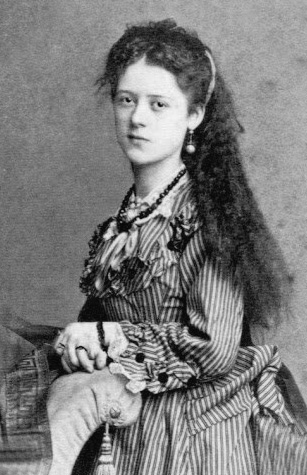
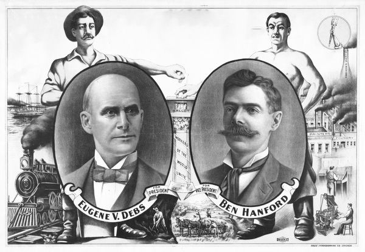

Газета №14 — Альянс Таймс
Объявление о пропаже

Уважаемые граждане, три месяца назад пропала моя дочь Мисс Флетчер. Всем, кто обладает какой-либо информацией, прошу обращаться в редакцию газеты. Если это прольет свет на местоположение моей дочери, живой или мертвой, гарантирую денежное вознаграждение в 4 000 шекелей альянса.
Нам пишут…
Во снах - мы в облаках,
Во снах - мы предвкушаем солнце,
Но наяву нас окружает темнота,
Ведь наяву мы видим лишь уродство.
Сквозь череду окон в покатых стенах,
Приходит осознание бытия,
Ей уготовано судьбой:
Отдать себя…
— Созерцатель.
Зелье Смерти — эвтаназия это просто
Все мы сталкивались с проблемой, когда человеку пора бы уже отправится на суд к Ординеи, избавиться от мук телесных и душевных, уйти в лучший мир полный новых надежд, возможно, просто убежать от непосильных забот и долгов. Но как только Вы представляете Ваше тело болтающее в петле или с огромной дырой по середине головы Вас бросает в дрожь, Вам хочется передумать и оставить всё как есть? У нас есть решение! Зелье смерти поможет Вам уйти из жизни как настоящему джентльмену без крови и мук, без испражнений на полу и прочих мерзостей процесса умирания. Мы предлагаем настоящее счастье — Эвтаназия для каждого страждущего её. Вам нужно просто выпить зелье до дна и закрыть глаза, когда вы их откроете перед Вами будет стоять уже Ординея и всё это счастье всего за 2000 шекелей альянса конфедерации. Спрашивайте во всех храмах Фальке.
Начало Больших игр
2 дня первого осеннего месяца Элула стартовали Большие Игры, в этот раз команды борются за гигантский приз в 500 000 шекелей альянса конфедерации. Нашим корреспондентам стало известно, что самый старт ознаменовался большим лесным пожаром, сопровождавшимся взрывом, на границе с зоной свободной от законов. Также многие заявили о приближении конца времён, ведь с неба сыпались мёртвые Хоббиты.
Выборы, Выборы!

Ты, гражданин Конфедерации, не забудь прийти на выборы Совета Конфедерации, от этого зависит наше общее будущее! Приди и запиши свой голос в вечности. Ты нужен своей стране 13 дня осеннего месяца Тишрея.